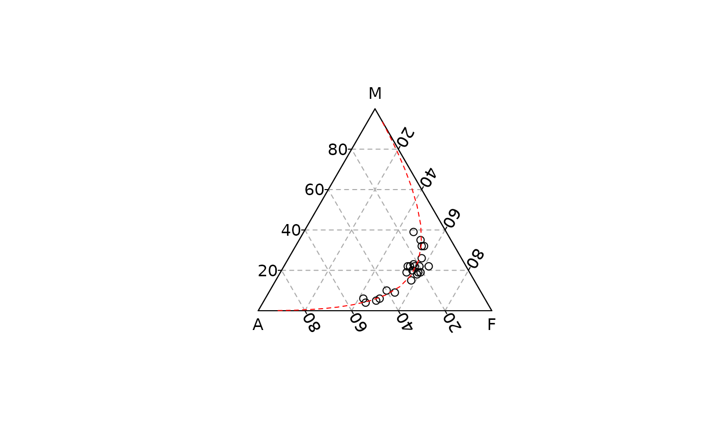

Computes and draws principal component.
Usage
ternary_pca(x, y, z, ...)
# S4 method for numeric,numeric,numeric
ternary_pca(x, y, z, axis = 1, ...)
# S4 method for ANY,missing,missing
ternary_pca(x, axis = 1, ...)Arguments
- x, y, z
A
numericvector giving the x, y and z ternary coordinates of a set of points. Ifyandzare missing, an attempt is made to interpretxin a suitable way (seegrDevices::xyz.coords()).- ...
Further arguments to be passed to
graphics::lines().- axis
An
integerspecifying the dimension to be plotted.
See also
Other statistics:
ternary_contour(),
ternary_density(),
ternary_ellipse(),
ternary_hull(),
ternary_mean()
Examples
## PCA
## Data from Aitchison 1986
ternary_plot(lava, panel.first = ternary_grid())
#> [1] 0.2 0.0 0.8
#> [1] 0.8 0.2 0.0
#> [1] 0.0 0.8 0.2
#> [1] 0.2 0.8 0.0
#> [1] 0.0 0.2 0.8
#> [1] 0.8 0.0 0.2
#> [1] 0.4 0.0 0.6
#> [1] 0.6 0.4 0.0
#> [1] 0.0 0.6 0.4
#> [1] 0.4 0.6 0.0
#> [1] 0.0 0.4 0.6
#> [1] 0.6 0.0 0.4
#> [1] 0.6 0.0 0.4
#> [1] 0.4 0.6 0.0
#> [1] 0.0 0.4 0.6
#> [1] 0.6 0.4 0.0
#> [1] 0.0 0.6 0.4
#> [1] 0.4 0.0 0.6
#> [1] 0.8 0.0 0.2
#> [1] 0.2 0.8 0.0
#> [1] 0.0 0.2 0.8
#> [1] 0.8 0.2 0.0
#> [1] 0.0 0.8 0.2
#> [1] 0.2 0.0 0.8
#> [1] 52 52 47 45 40 37 27 27 23 22 21 25 24 22 22 20 16 17 14 13 13 14 24
#> [1] 42 44 48 49 50 54 58 54 59 59 60 53 54 55 56 58 62 57 54 55 52 47 56
#> [1] 6 4 5 6 10 9 15 19 18 19 19 22 22 23 22 22 22 26 32 32 35 39 20
#> [1] 0.2 0.4 0.6 0.8
#> [1] 0.8 0.6 0.4 0.2
#> [1] 0 0 0 0
#> [1] 0 0 0 0
#> [1] 0.2 0.4 0.6 0.8
#> [1] 0.8 0.6 0.4 0.2
#> [1] 0.8 0.6 0.4 0.2
#> [1] 0 0 0 0
#> [1] 0.2 0.4 0.6 0.8
ternary_pca(lava, axis = 1, col = "red", lty = 2)

#> [1] 0.001182879 0.002186158 0.003996896 0.007201707 0.012729172 0.021950679
#> [7] 0.036711430 0.059201085 0.091597498 0.135522100 0.191483871 0.258541920
#> [13] 0.334324282 0.415383887 0.497766932 0.577637441 0.651810459 0.718083121
#> [19] 0.775320959 0.823335174 0.862637828 0.894168026 0.919054722
#> [1] 0.06490955 0.08951499 0.12211897 0.16418815 0.21654717 0.27864186
#> [7] 0.34773286 0.41842741 0.48308115 0.53332585 0.56229049 0.56650733
#> [13] 0.54662377 0.50677626 0.45314656 0.39238646 0.33038934 0.27159730
#> [19] 0.21881560 0.17338817 0.13555555 0.10484651 0.08041225
#> [1] 0.9339075665 0.9082988515 0.8738841340 0.8286101468 0.7707236574
#> [6] 0.6994074621 0.6155557089 0.5223715076 0.4253213468 0.3311520490
#> [11] 0.2462256406 0.1749507472 0.1190519481 0.0778398492 0.0490865078
#> [16] 0.0299761038 0.0178002019 0.0103195813 0.0058634420 0.0032766612
#> [21] 0.0018066213 0.0009854657 0.0005330249